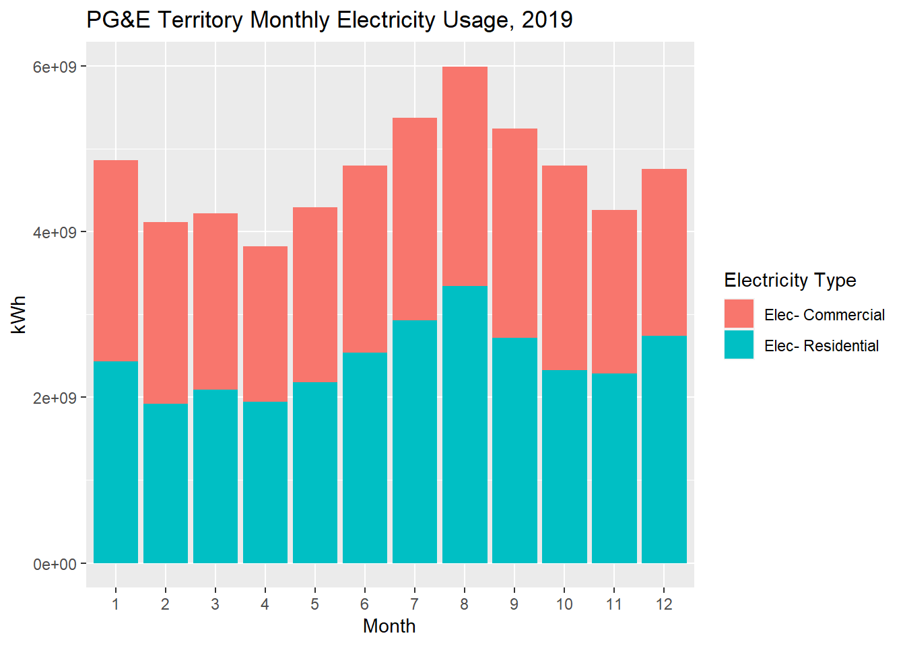

1.8 Plots
ggplot2 from tidyverse provides standard plotting capabilities for dataframes, like bar charts, pie charts, line charts, scatter plots, etc. Each new plot you want to create will require some learning curve on exact formatting, and usually requires a trip to online documentation. While this may feel at the onset like it’s much more complicated than creating similar plots in Excel or Google Sheets, I encourage you to resist the temptation to transfer CSV data over to those tools and build up familiarity with plotting in R, because the light at the end of the tunnel is automation and scaling up of plot operations (especially once you can just copy/paste a lot of past plotting scripts), as well as customizable and interactive charts that can be published online.
Generally, plotting with ggplot2 involves the function ggplot() that receives at the minimum a dataset, followed by a series of “features” which dictate how the data is visualized, strung together by + signs instead of %>%s (but since the first ggplot() receives a dataset, this entire sequence can be appended to a pipeline). Again, I wouldn’t expect most R users to have memorized exactly what the ggplot2 features are unless you very regularly create plots, so usually getting the plot parameters set up correctly involves a lot of copy/paste from online examples. Below is my own example making a stacked bar chart of the PG&E data:
library(tidyverse)
library(plotly)
pge_chart <-
pge_final %>%
ggplot() +
geom_bar(
aes(
x = MONTH,
y = TOTALKWH,
fill = CUSTOMERCLASS
),
stat = "identity",
position = "stack"
) +
labs(
x = "Month",
y = "kWh",
title = "PG&E Territory Monthly Electricity Usage, 2019",
fill = "Electricity Type"
)
Notes:
- I’m choosing to store the plot itself in a variable called
pge_chart, which means that to display it in the knitted web page, I need to include the last line. If I didn’t want to store the result in a variable and just plot directly, I’d just start the longer operation withpge_final %>%. - The
aes()argument is pretty standard across all kinds of plots, and should correspond well to choices you’d typically make in Excel.fill =lets you specify a field with discrete options that you’d like to use to split your data into groups; in a sense, it’s similar togroup_by(). Note that there are different arguments that have a similar grouping effect, and may apply only to different chart types and field types, likelinetype =orsize =, which you’ll learn as needed. - You could have put the
aes()argument inside ofggplot()itself, which would imply that those selections are standard for the entire plot. That happens to be the case here, but I would recommend generally putting this inside of specific plot type function, likegeom_bar()orgeom_point(), because that lets you make explicit decisions of what data is used for each plot type if you were to combine multiple plot types together. stat =here especially lets you distinguish between “identity” and “count” which would be the difference between counting kilowatt-hours on the y-axis or counting the number of entries in the dataframe (more similar to a histogram). You’re encouraged to adjust this to see the effect on the plot.position =here especially lets you choose between stacking the two different customer classes or “dodge” which would put them side by side. Again, you’re encouraged to try it out.labs()generally lets you specify labels, and in this case, because you supplied afill =argument earlier, you can change the name of the legend by usingfill =. There are additional functions you can add to the operation to also customize the labels for the items in the legend, but generally I’d recommend just mutating the original data in advance so that the labels are already what you’d like.
There are many ways to customize such plots, but I’ll leave you to explore those on your own based on the plots you want to create, and instead I’d rather point you to an even better way to make plots if you want them to be interactive on a web page, which is with the plotly package. There is a whole separate documentation of how to create plots in plotly which I could have also shown you examples of, but since ggplot2 is native to the tidyverse it’s still worth being familiar with. Plus, there’s a neat function created by the plotly team called ggplotly() that generally allows you to convert ggplot2 plots into plotly plots, as demonstrated below (recall we’ve already called library(plotly) so we can use this function):
Just like that, you can create a version of the plot that gives you interaction when you hover over the plot, and allows you to deselect items in the legend. You’ll notice there’s a large icon bar that shows up at the top, and by default there is a zoom-in option that can be disorienting; if you’re prefer not to have these, you can add the following into the pipeline:
pge_chart %>%
ggplotly() %>%
layout(
xaxis = list(fixedrange = T),
yaxis = list(fixedrange = T)
) %>%
config(displayModeBar = F)If you’re planning to create web reports, there’s essentially never a reason you wouldn’t want to give your reader an interactive plot if you can, and if you so far only know how to generate plots using ggplot2, this is a nifty conversion trick. Otherwise, plotly is less user-friendly to directly code in but provides additional customizability, and is something you’d want to pick up as you start creating dashboards. Here, for your curiosity, would be a recreation of the above plot in native plotly:
plot_ly() %>%
add_trace(
data = pge_final %>% filter(CUSTOMERCLASS == "Elec- Commercial"),
x = ~MONTH,
y = ~TOTALKWH,
type = "bar",
name = "Residential"
) %>%
add_trace(
data = pge_final %>% filter(CUSTOMERCLASS == "Elec- Commercial"),
x = ~MONTH,
y = ~TOTALKWH,
type = "bar",
name = "Commercial"
) %>%
layout(
xaxis = list(
title = "Month",
fixedrange = T
),
yaxis = list(
title = "kWh",
fixedrange = T
),
barmode = "stack",
legend = list(title = list(text = "Electricity Type"))
) %>%
config(displayModeBar = F)We’ll keep needing plots throughout the whole textbook, so expect to pick up more and more plotting techniques as we go, but also be prepared to Google whenever you want to do something you haven’t done before.